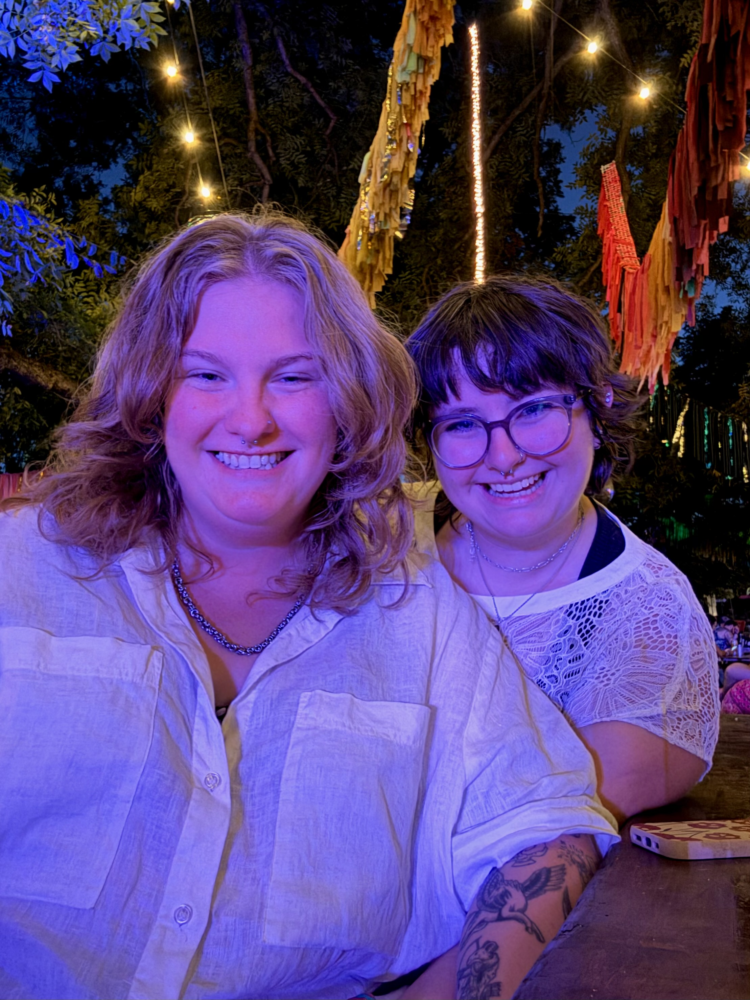

Hi, I’m
Maddy Beal.
A builder who cares about craft, people, and follow-through — and who shows up the same way outside of work as I do inside it.
Get the highlights.
A quick tour — the traits I’m proud to be consistent about.

Highlight
Community builder.
I care about making spaces where people feel seen and supported — and I’m comfortable taking the first step to make that happen.
About
I’m the kind of person who likes building things that feel thoughtful — clear structure, clean details, and the “it just works” experience.
How I work
I communicate early, write things down, and reduce ambiguity. I’m happiest when the team has a crisp plan and the space to execute.
Who I am outside CS
I’m energized by people: community, games, learning new things, and showing up for my friends and family.
Values
The traits I try to bring to every team and every room.
Craft
Details matter. I like polishing the last 10% until it feels effortless.
Empathy
I try to understand the “why” behind people’s needs before proposing solutions.
Ownership
I take responsibility for outcomes, not just tasks.
Clarity
Good writing and simple structures make teams faster and calmer.
Momentum
Small wins compound. I keep projects moving with lightweight check-ins.
Integrity
I’m direct, kind, and consistent — especially when it’s uncomfortable.
Life outside of work
What I’m into
- Board games, card games, puzzles
- Concerts and live music
- Friendly competition and learning new skills
- Fitness goals and long walks/hikes
What people get from me
- A teammate who follows through
- Someone who makes plans feel doable
- Calm energy under pressure
- A bias toward action — without cutting corners
Highlights
A few moments that represent my trajectory and how I show up.
Apple internships
Built strong habits around stakeholder communication, DRI alignment, and execution.
Community leadership
Organized and led initiatives that create belonging and momentum for others.
Builder mindset
I like shipping: starting small, iterating fast, and improving continuously.
Contact
If you want a candidate who’s high-ownership and detail-oriented, let’s talk.
Tip: keep this page simple. Let the writing do the work.